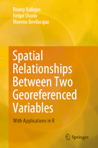

Research · Software · Teaching
Felipe Osorio
Applied statistician
Felipe Osorio is an applied statistician whose research focuses on statistical modeling, regression methods, multivariate analysis, and statistical inference. He received the degree in statistical engineering from the Universidad de Valparaíso, Chile, in 2001, and the D.Sc. degree in statistics from the Universidade de São Paulo, Brazil, in 2006.
His research aims to develop rigorous statistical methods that are both theoretically sound and practically relevant, with applications across a wide range of scientific fields. Dr. Osorio is co-author of the Springer book Spatial Relationships Between Two Georeferenced Variables: With Applications in R , a reference on the analysis of spatially referenced data. He is the creator and the maintainer of several packages for the R statistical environment .
Alongside his research, he is committed to excellence in teaching and the training of undergraduate and graduate students, contributing to the development of the next generation of statisticians and data scientists.
Book
Vallejos, R., Osorio, F., Bevilacqua, M. (2020).
Spatial Relationships Between Two Georeferenced Variables
With Applications in R. Springer, Cham.
DOI: 10.1007/978-3-030-56681-4
This book is about how to assess the correlation between two spatial processes. The book describes several different scenarios in which the correlation between two or more sequences is computed. This includes, for instance, useful material for people interested in spatial statistics, time series and image analysis.
